Verified FITS downloads
342 verified optical band files for 96 galaxies. Checked 2026-10-16T13:29:26+00:00.
One download per optical band. DR9 first, with checked DR10/DR11 fallback.
What’s included and how coverage was checked
Download links go directly to the official Legacy Surveys cutout service. We prefer DR9 for each g, r and z band, then try DR10 and DR11. The i band starts at DR10 because DR9 has no i-band images.
Counts mean distinct downloadable band cutouts. An image and its inverse-variance extension are not two bands; alternative releases are not double-counted.
These are newly retrieved, sky-centered survey cutouts at each galaxy’s saved native display scale. They cover a 512-pixel square and are not the deprojected pictures, fitted models or residual images shown on the site. Exact equivalence to the original input FITS has not been established.
Every listed file was downloaded and parsed. Band, release and WCS center were checked, and empty images were rejected. At least 50% of the central 16 × 16 pixels must be covered; central coverage below 90% is flagged. When the service supplies inverse variance, coverage requires it to be positive and finite. Coarser rebinned cutouts may omit inverse variance; for those, finite nonzero image pixels are only a coverage proxy. Partial edge coverage is flagged. These counts include the preferred coverage-qualified file per band. Valid FITS with lower central coverage, as well as empty responses and other attempted releases, remain in the full JSON audit with their URLs and measurements. Availability is not a scientific-quality guarantee.
Full JSON audit · CSV inventory · Repeatable audit script · Survey documentation
30 band requests could not be conclusively verified. See the JSON audit for errors; these are excluded from counts.
96 galaxies
| Galaxy / diagnostic image | FITS bands | Download by band and release | Field and coverage |
|---|---|---|---|
| J004332.39+142033.2 | 3 | 512 × 512 pixels 0.629839″/pixel 322.5″ field No usable target coverage: i; Image only (no IVAR): g, r, z | |
| J020824.97+142058.4 | 3 | 512 × 512 pixels 0.583636″/pixel 298.8″ field No usable target coverage: i; Image only (no IVAR): g, r, z | |
| J025154.58+003953.3 | 4 | 512 × 512 pixels 0.460769″/pixel 235.9″ field Image + inverse variance | |
| J030848.32-070226.1 | 4 | 512 × 512 pixels 0.577424″/pixel 295.6″ field Image only (no IVAR): g, r, i, z | |
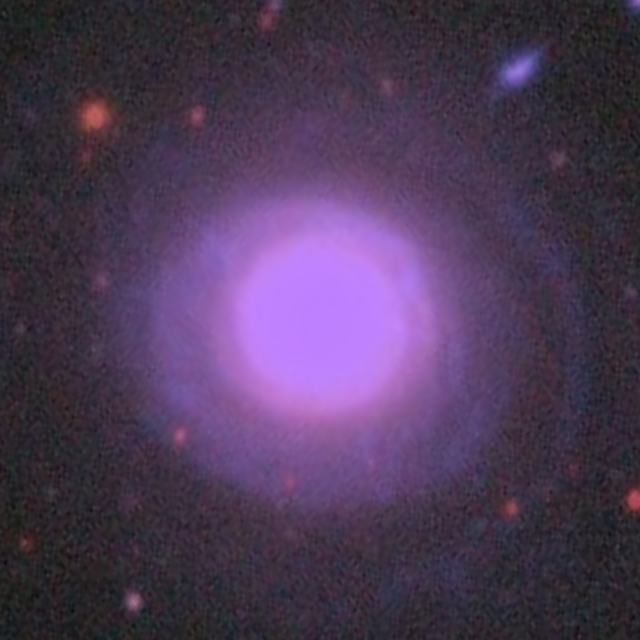 J031347.83+004139.7 | 4 | 512 × 512 pixels 0.416563″/pixel 213.3″ field Image + inverse variance | |
| J034626.96-063152.5 | 4 | 512 × 512 pixels 0.449889″/pixel 230.3″ field Image + inverse variance | |
| J073836.50+373800.6 | 3 | 512 × 512 pixels 0.597810″/pixel 306.1″ field Unverified (service error): i; Image only (no IVAR): g, r, z | |
| J075701.86+493402.4 | 3 | 512 × 512 pixels 0.619412″/pixel 317.1″ field Unverified (service error): i; Image only (no IVAR): g, r, z | |
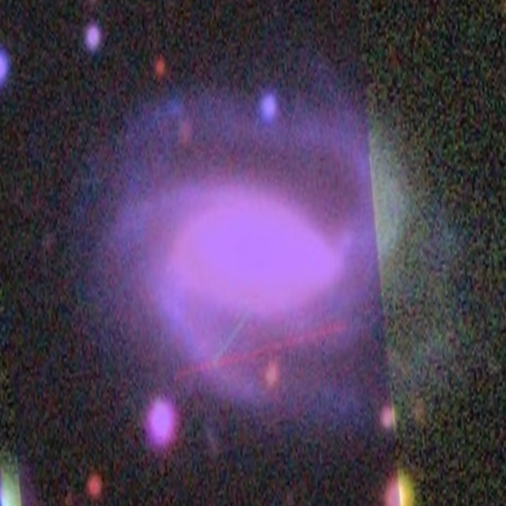 J075708.03+103547.7 | 4 | 512 × 512 pixels 0.337768″/pixel 172.9″ field Image + inverse variance | |
| J080036.67+222400.1 | 4 | 512 × 512 pixels 0.455223″/pixel 233.1″ field Partial footprint: i (97.7%) | |
| J080707.17+361400.4 | 3 | 512 × 512 pixels 0.347136″/pixel 177.7″ field Unverified (service error): i | |
| J081422.02+391504.8 | 3 | 512 × 512 pixels 0.416563″/pixel 213.3″ field Unverified (service error): i | |
| J081807.59+263801.8 | 4 | 512 × 512 pixels 0.400702″/pixel 205.2″ field Image + inverse variance | |
| J082959.96+524149.8 | 3 | 512 × 512 pixels 0.347136″/pixel 177.7″ field Unverified (service error): i | |
| J083203.49+240039.2 | 4 | 512 × 512 pixels 0.578455″/pixel 296.2″ field Partial footprint: i (91.6%); Image only (no IVAR): g, r, i, z | |
| J083909.27+450747.7 | 3 | 512 × 512 pixels 0.288200″/pixel 147.6″ field Unverified (service error): i | |
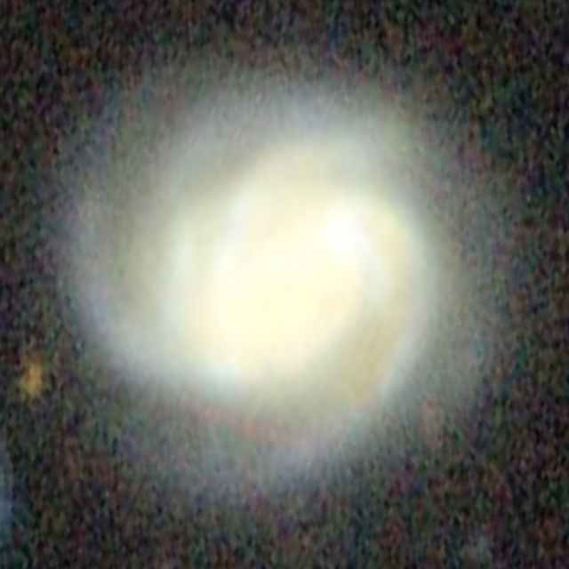 J084533.12+261922.5 | 4 | 512 × 512 pixels 0.288200″/pixel 147.6″ field Image + inverse variance | |
| J085741.79+430738.9 | 3 | 512 × 512 pixels 0.416563″/pixel 213.3″ field Unverified (service error): i | |
| J091214.52+445717.4 | 3 | 512 × 512 pixels 1.168698″/pixel 598.4″ field Unverified (service error): i; Image only (no IVAR): g, r, z | |
| J092217.59+044230.0 | 4 | 512 × 512 pixels 0.359978″/pixel 184.3″ field Image + inverse variance | |
| J092238.17+605155.6 | 3 | 512 × 512 pixels 0.347136″/pixel 177.7″ field Unverified (service error): i | |
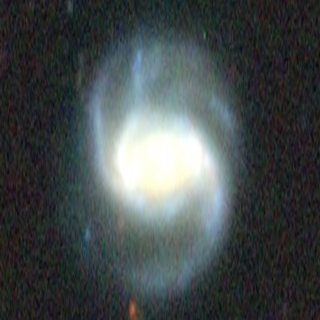 J093015.61+364133.3 | 3 | 512 × 512 pixels 0.356557″/pixel 182.6″ field Unverified (service error): i | |
| J093757.99+252941.2 | 4 | 512 × 512 pixels 0.599851″/pixel 307.1″ field Image only (no IVAR): g, r, i, z | |
| J094302.19+374923.3 | 3 | 512 × 512 pixels 0.435162″/pixel 222.8″ field Unverified (service error): i | |
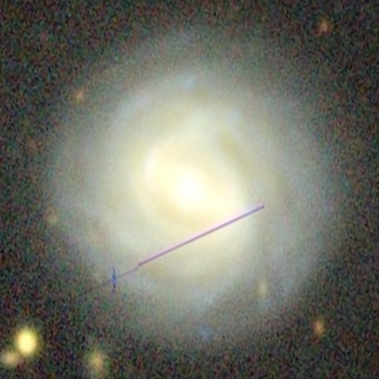 J094457.09+164226.7 | 4 | 512 × 512 pixels 0.449881″/pixel 230.3″ field Partial footprint: g (99.0%), r (97.9%), z (98.8%) | |
| J094854.49+245229.0 | 4 | 512 × 512 pixels 0.305932″/pixel 156.6″ field Image + inverse variance | |
| J095045.54+224515.9 | 4 | 512 × 512 pixels 0.470172″/pixel 240.7″ field Image + inverse variance | |
| J095056.24+621108.5 | 3 | 512 × 512 pixels 0.491021″/pixel 251.4″ field Unverified (service error): i | |
| J095145.09+031620.6 | 4 | 512 × 512 pixels 0.288200″/pixel 147.6″ field Image + inverse variance | |
| J095204.01+405129.4 | 3 | 512 × 512 pixels 0.347136″/pixel 177.7″ field Unverified (service error): i; Partial footprint: g (98.9%), r (98.8%) | |
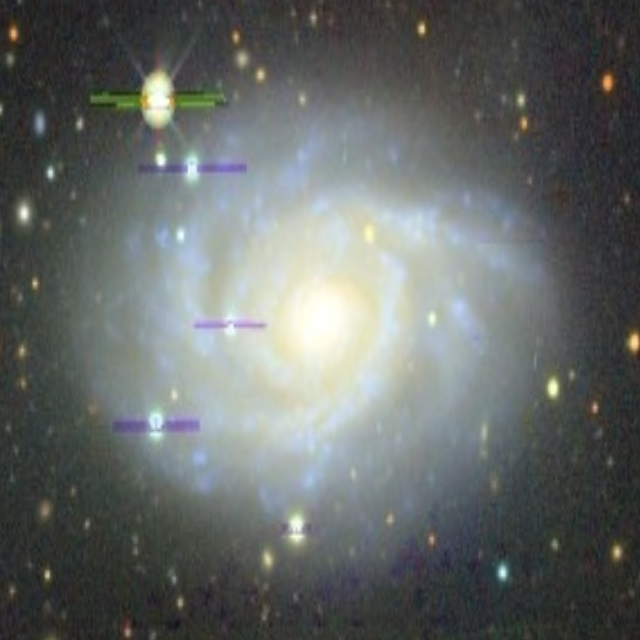 J095307.14+164039.6 | 4 | 512 × 512 pixels 0.979578″/pixel 501.5″ field Image only (no IVAR): g, r, i, z | |
| J100242.47+674349.7 | 3 | 512 × 512 pixels 0.368716″/pixel 188.8″ field Unverified (service error): i | |
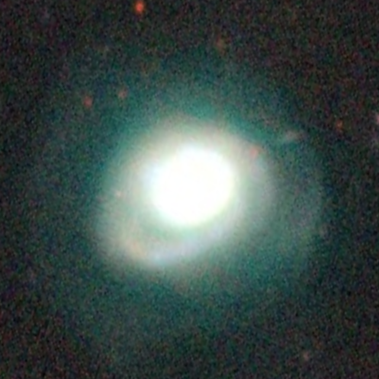 J100323.33+482157.0 | 3 | 512 × 512 pixels 0.416563″/pixel 213.3″ field Unverified (service error): i | |
| J100616.91+034939.9 | 4 | 512 × 512 pixels 0.484404″/pixel 248.0″ field Image + inverse variance | |
| J101241.60+291832.7 | 4 | 512 × 512 pixels 0.347136″/pixel 177.7″ field Partial footprint: i (90.5%) | |
| J101715.98+532742.8 | 3 | 512 × 512 pixels 0.416563″/pixel 213.3″ field Unverified (service error): i | |
| J103448.55+154255.0 | 4 | 512 × 512 pixels 0.294810″/pixel 150.9″ field Image + inverse variance | |
| J104244.63+265036.8 | 4 | 512 × 512 pixels 0.347136″/pixel 177.7″ field Image + inverse variance | |
| J105225.08+594107.9 | 3 | 512 × 512 pixels 0.347136″/pixel 177.7″ field Unverified (service error): i | |
| J105231.11+071329.6 | 4 | 512 × 512 pixels 0.347136″/pixel 177.7″ field Image + inverse variance | |
| J105946.27+332330.5 | 3 | 512 × 512 pixels 0.347136″/pixel 177.7″ field No usable target coverage: i | |
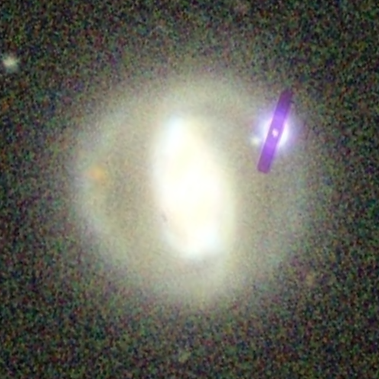 J111326.77+303627.1 | 4 | 512 × 512 pixels 0.289280″/pixel 148.1″ field Image + inverse variance | |
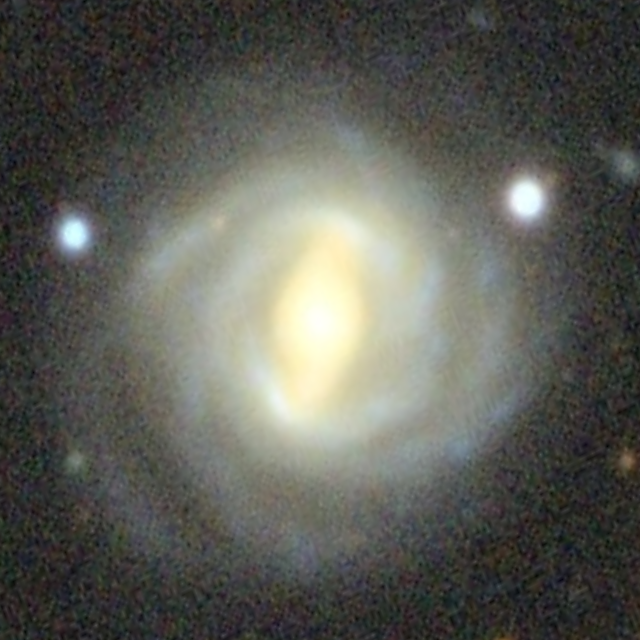 J113423.32-023145.5 | 4 | 512 × 512 pixels 0.347136″/pixel 177.7″ field Image + inverse variance | |
| J114743.68+014934.3 | 4 | 512 × 512 pixels 0.551465″/pixel 282.4″ field Image only (no IVAR): g, r, i, z | |
| J115502.29+271752.2 | 4 | 512 × 512 pixels 0.477208″/pixel 244.3″ field Image + inverse variance | |
| J120356.03+071747.6 | 4 | 512 × 512 pixels 0.366788″/pixel 187.8″ field Image + inverse variance | |
| J120709.23+534017.2 | 3 | 512 × 512 pixels 0.347136″/pixel 177.7″ field Unverified (service error): i | |
| J121037.50+160158.5 | 4 | 512 × 512 pixels 0.719822″/pixel 368.5″ field Partial footprint: i (83.1%); Image only (no IVAR): g, r, i, z | |
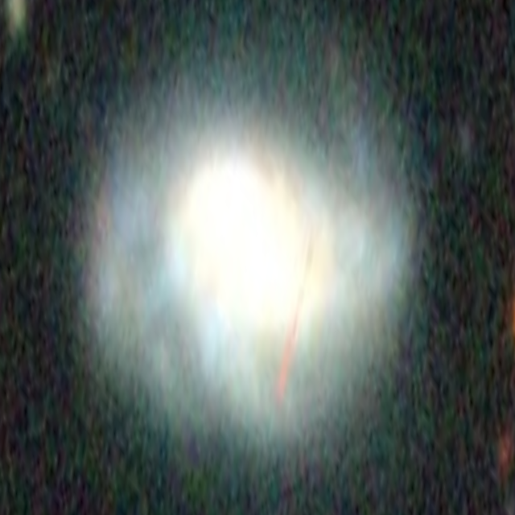 J121131.38+515148.5 | 3 | 512 × 512 pixels 0.383219″/pixel 196.2″ field Unverified (service error): i | |
| J121449.33+330111.0 | 3 | 512 × 512 pixels 0.289280″/pixel 148.1″ field No usable target coverage: i | |
| J121821.42+251300.3 | 4 | 512 × 512 pixels 0.599851″/pixel 307.1″ field Image only (no IVAR): g, r, i, z | |
| J122659.47+223822.4 | 4 | 512 × 512 pixels 0.452679″/pixel 231.8″ field Image + inverse variance | |
| J123027.26+184834.9 | 4 | 512 × 512 pixels 0.289280″/pixel 148.1″ field Image + inverse variance | |
| J123142.75+333514.7 | 3 | 512 × 512 pixels 0.392730″/pixel 201.1″ field No usable target coverage: i | |
| J123600.11+541315.4 | 3 | 512 × 512 pixels 0.499876″/pixel 255.9″ field Unverified (service error): i | |
| J123713.54+492653.6 | 3 | 512 × 512 pixels 0.416563″/pixel 213.3″ field Unverified (service error): i | |
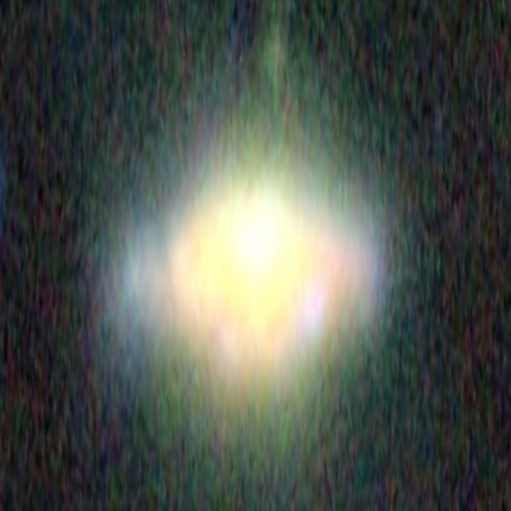 J124206.46+324539.5 | 3 | 512 × 512 pixels 0.319538″/pixel 163.6″ field No usable target coverage: i | |
| J124428.12-030018.8 | 4 | 512 × 512 pixels 0.466301″/pixel 238.7″ field Image + inverse variance | |
| J125112.88+045132.5 | 4 | 512 × 512 pixels 0.416563″/pixel 213.3″ field Image + inverse variance | |
| J125244.49+591556.2 | 3 | 512 × 512 pixels 0.295506″/pixel 151.3″ field Unverified (service error): i | |
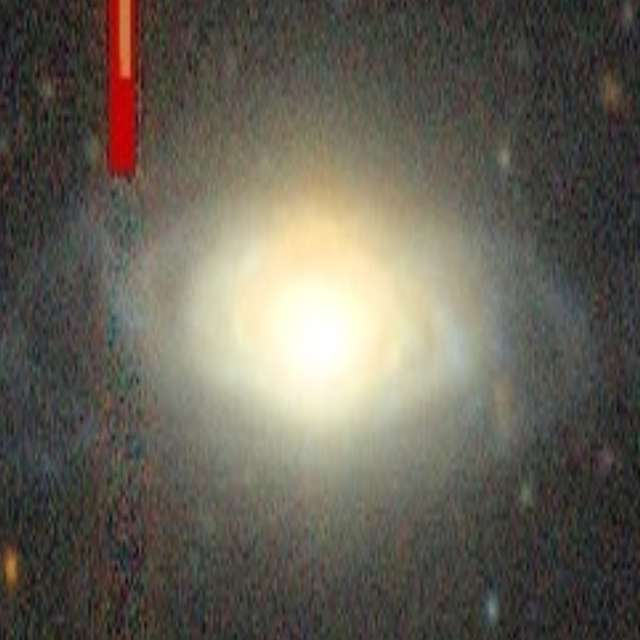 J125831.75+081302.8 | 4 | 512 × 512 pixels 0.359589″/pixel 184.1″ field Partial footprint: z (98.8%) | |
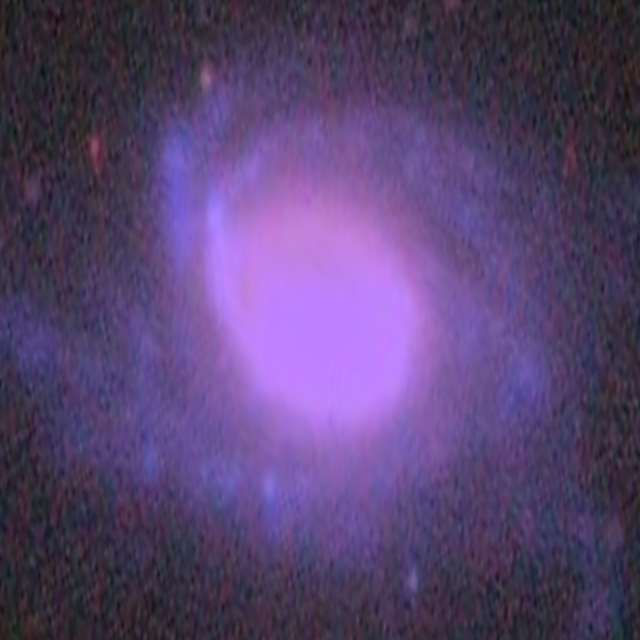 J131745.18+273411.5 | 4 | 512 × 512 pixels 0.499876″/pixel 255.9″ field Image + inverse variance | |
| J132956.48+505301.9 | 3 | 512 × 512 pixels 0.348181″/pixel 178.3″ field Unverified (service error): i | |
| J133038.54+180804.5 | 4 | 512 × 512 pixels 0.416563″/pixel 213.3″ field Image + inverse variance | |
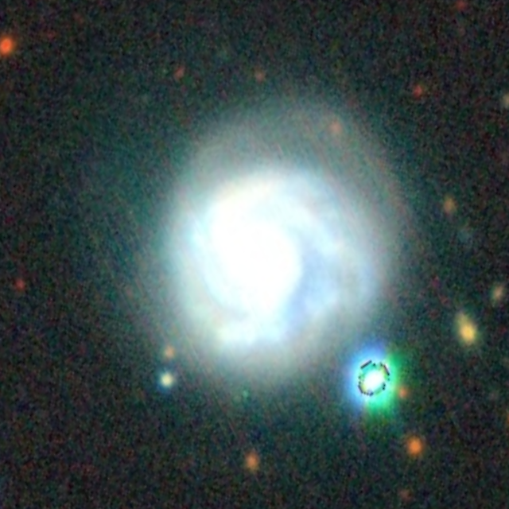 J134009.10+365139.9 | 3 | 512 × 512 pixels 0.347136″/pixel 177.7″ field Unverified (service error): i | |
| J134234.06+313150.9 | 3 | 512 × 512 pixels 0.347136″/pixel 177.7″ field No usable target coverage: i | |
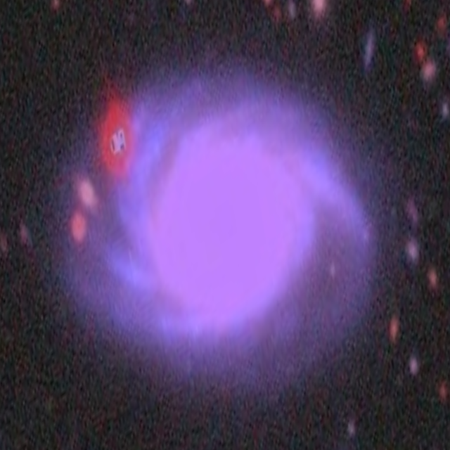 J134632.22+205051.0 | 4 | 512 × 512 pixels 0.440622″/pixel 225.6″ field Image + inverse variance | |
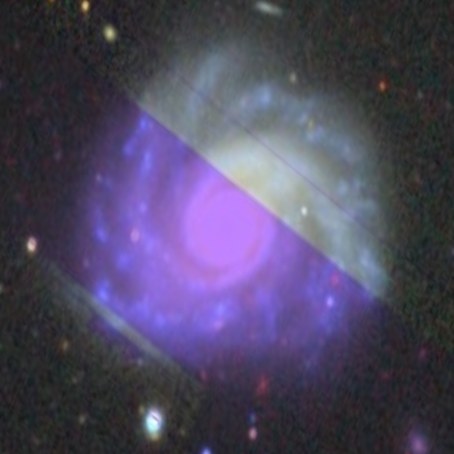 J134652.67+161622.2 | 3 | 512 × 512 pixels 0.615684″/pixel 315.2″ field No usable target coverage: i; Image only (no IVAR): g, r, z | |
| J135034.52+445044.9 | 3 | 512 × 512 pixels 0.289280″/pixel 148.1″ field Unverified (service error): i | |
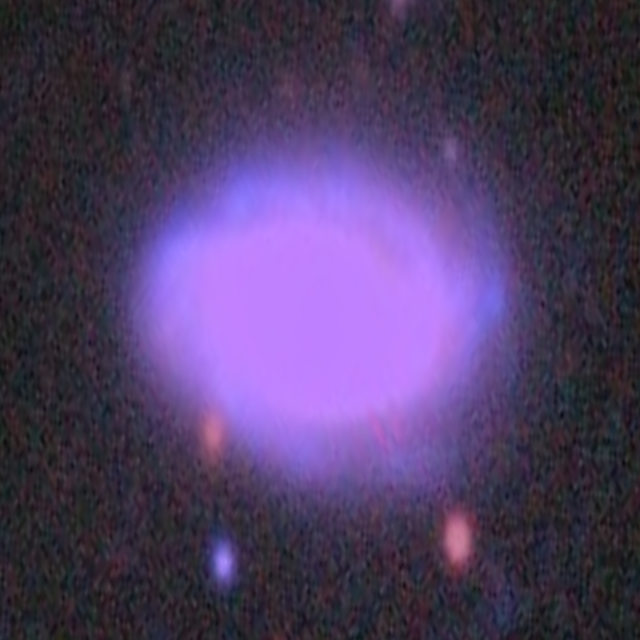 J135107.46+240105.6 | 4 | 512 × 512 pixels 0.347136″/pixel 177.7″ field Image + inverse variance | |
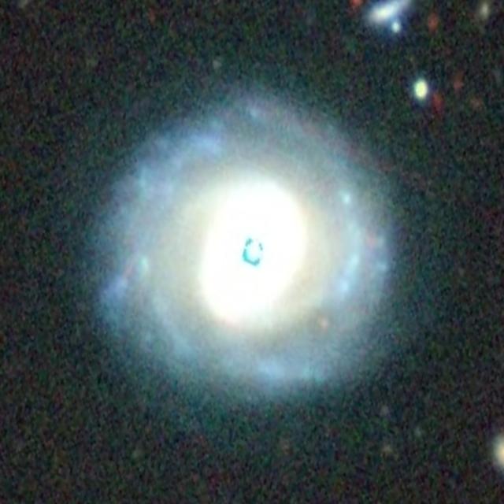 J135429.15+541950.3 | 3 | 512 × 512 pixels 0.416563″/pixel 213.3″ field Unverified (service error): i; Central masking/coverage <90%: z (83.2%) | |
| J135807.05-002332.9 | 4 | 512 × 512 pixels 0.312423″/pixel 160.0″ field Image + inverse variance | |
| J141235.80+471510.9 | 3 | 512 × 512 pixels 0.347136″/pixel 177.7″ field Unverified (service error): i | |
| J142213.95+172350.4 | 4 | 512 × 512 pixels 0.347136″/pixel 177.7″ field Partial footprint: i (75.1%) | |
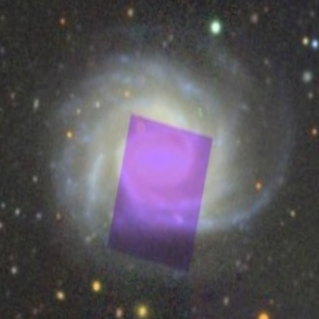 J142711.81-021544.6 | 3 | 512 × 512 pixels 0.726191″/pixel 371.8″ field No usable target coverage: i; Image only (no IVAR): g, r, z | |
| J142757.71+625609.3 | 3 | 512 × 512 pixels 0.288200″/pixel 147.6″ field Unverified (service error): i | |
| J143933.10+620010.5 | 3 | 512 × 512 pixels 0.396955″/pixel 203.2″ field Unverified (service error): i | |
| J152207.82+135541.5 | 4 | 512 × 512 pixels 0.490337″/pixel 251.1″ field Partial footprint: i (70.0%) | |
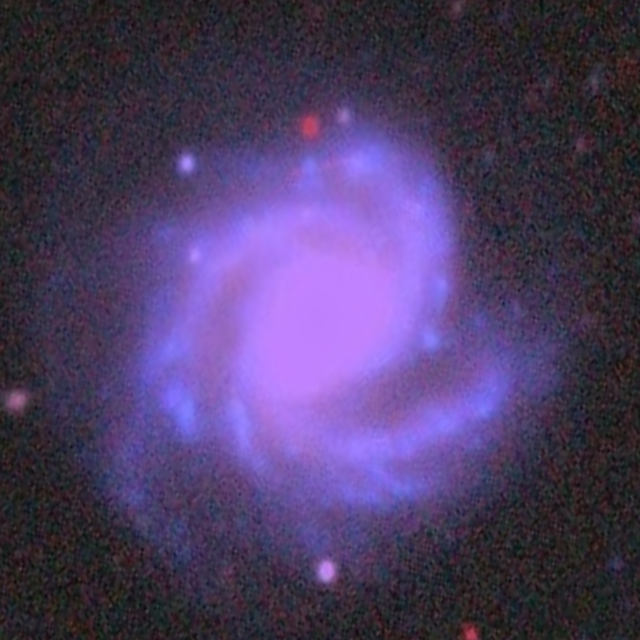 J152602.66+161923.6 | 4 | 512 × 512 pixels 0.383440″/pixel 196.3″ field Image + inverse variance | |
| J152847.28+254452.0 | 4 | 512 × 512 pixels 0.363667″/pixel 186.2″ field Image + inverse variance | |
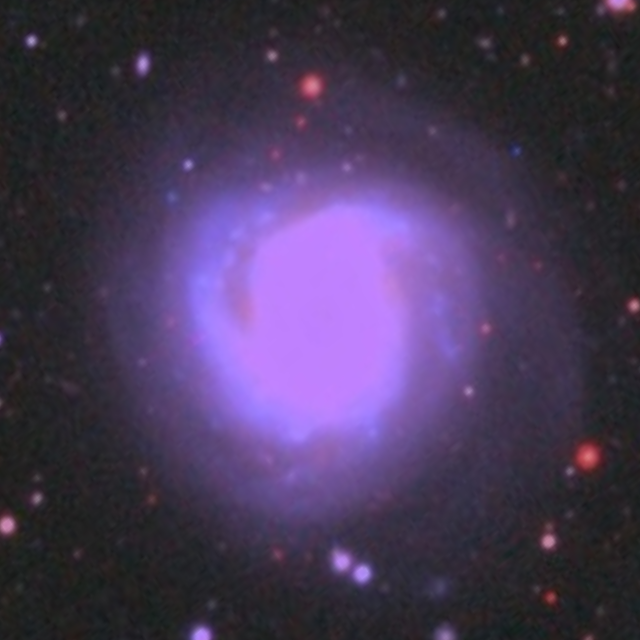 J153000.83+125921.5 | 3 | 512 × 512 pixels 0.647840″/pixel 331.7″ field No usable target coverage: i; Image only (no IVAR): g, r, z | |
| J153351.72+110038.5 | 4 | 512 × 512 pixels 0.416563″/pixel 213.3″ field Image + inverse variance | |
| J153938.96+101311.8 | 4 | 512 × 512 pixels 0.396879″/pixel 203.2″ field Image + inverse variance | |
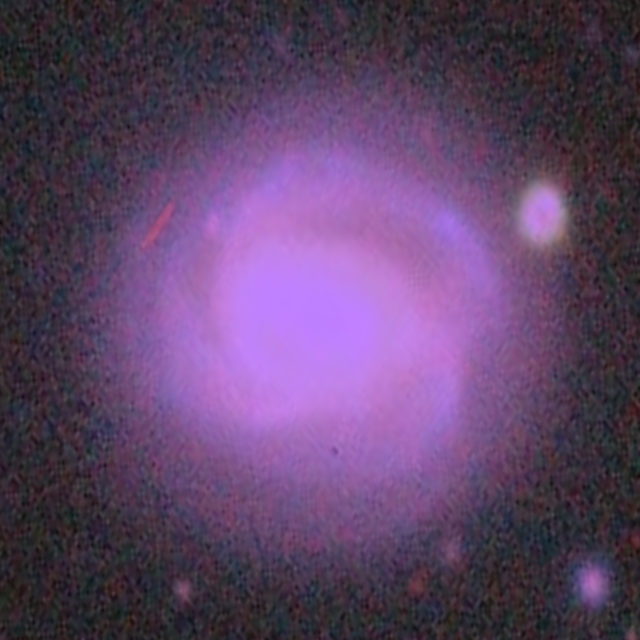 J155601.61+302502.6 | 3 | 512 × 512 pixels 0.375229″/pixel 192.1″ field No usable target coverage: i | |
| J155727.90+300335.4 | 3 | 512 × 512 pixels 0.688967″/pixel 352.8″ field No usable target coverage: i; Image only (no IVAR): g, r, z | |
| J160538.07+100207.4 | 4 | 512 × 512 pixels 0.428396″/pixel 219.3″ field Image + inverse variance | |
| J161354.89+145536.1 | 4 | 512 × 512 pixels 0.289280″/pixel 148.1″ field Image + inverse variance | |
| J163050.13+161502.6 | 4 | 512 × 512 pixels 0.461815″/pixel 236.4″ field Image + inverse variance | |
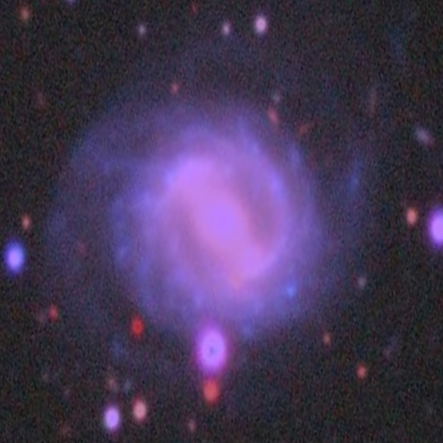 J163121.57+224149.4 | 4 | 512 × 512 pixels 0.458964″/pixel 235.0″ field Image + inverse variance | |
| J163446.00+451927.5 | 3 | 512 × 512 pixels 0.390907″/pixel 200.1″ field Unverified (service error): i | |
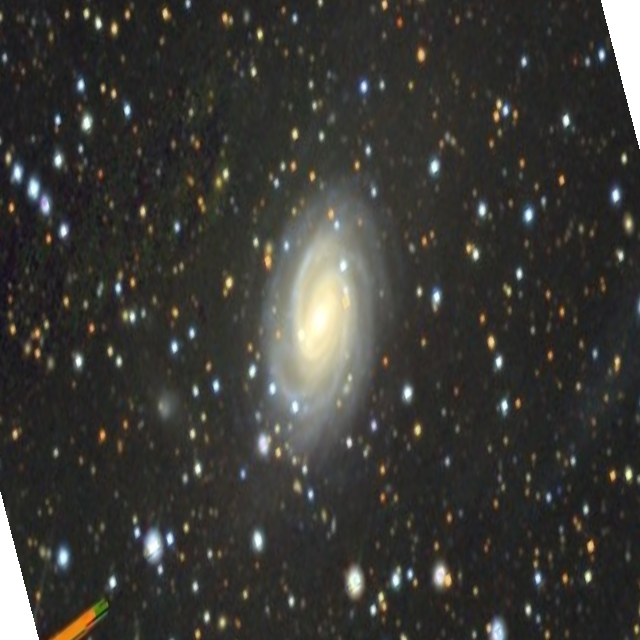 J203623.47-043707.4 | 4 | 512 × 512 pixels 1.155331″/pixel 591.5″ field Image only (no IVAR): g, r, i, z | |
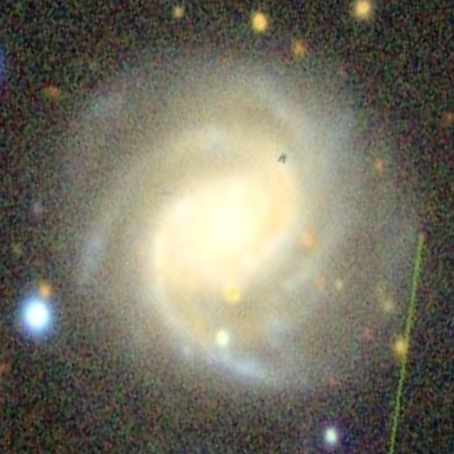 J205222.37+000432.6 | 4 | 512 × 512 pixels 0.374907″/pixel 192.0″ field Image + inverse variance | |
| J214907.29+002650.3 | 4 | 512 × 512 pixels 0.492928″/pixel 252.4″ field Image + inverse variance | |
| J215652.70+121857.9 | 4 | 512 × 512 pixels 0.395946″/pixel 202.7″ field Image + inverse variance | |
| J224424.36-000943.5 | 4 | 512 × 512 pixels 0.719822″/pixel 368.5″ field Image only (no IVAR): g, r, i, z | |
| J232923.57+141215.4 | 4 | 512 × 512 pixels 0.289280″/pixel 148.1″ field Image + inverse variance |
The public cutout service can be busy. If a download is rate-limited, wait before retrying. Files are generated by Legacy Surveys and are not stored as large binaries in this repository.